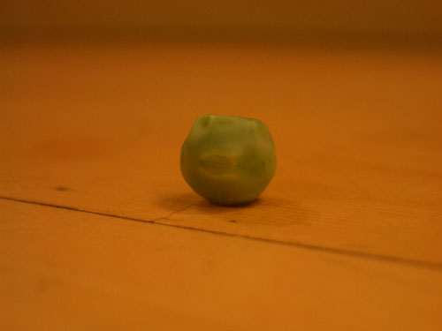
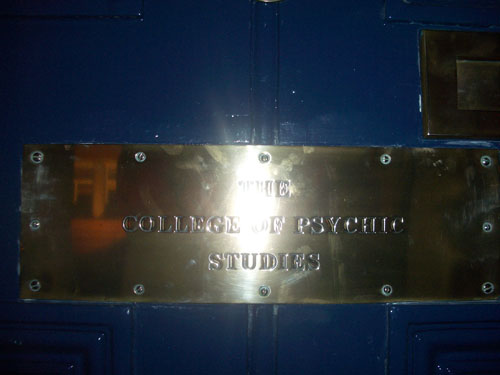

| < | > |
| Pea as in Psychic | [2004-09-08 09:17] |
| For some reason (I suppose because I'm hungry) I'm often clumsy in the kitchen. For example, I never seem to be able to get all the peas from the pot to the plate. There's always one that ends on the floor.  This got me to thinking about the destiny of peas. Why was that particular pea destined for the floor and the rubbish bin, rather than the fork and my digestive juices? Did it make any difference in the great scheme of things? Are not all peas effectively the same? As I was thus emphasizing with the poor pea and its fragile individuality, I went to the French Institute – the Lumiere had just opened after the holiday break – and as I was walking home after the movie, I found myself wondering how it would have been for that destined-to-fall-on-the-floor pea if it could have seen all along what was coming. Or indeed, does anyone look at a pot full of peas and know which one will end on the floor?  (The College of Psychic Studies is just across the road from the French Institute – yes, they have a doorbell.) |
|